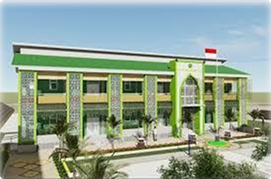

MTS N 2 SUMBAWA
Terwujudnya Generasi Qur'ani, Kompetitif, Peduli Lingkungan dan Ramah Anak
MTs Negeri 2 Sumbawa merupakan salah satu madrasah tsanawiyah negeri yang terletak di Kecamatan Empang, Kabupaten Sumbawa, Provinsi Nusa Tenggara Barat. Madrasah ini berdiri sejak 1 Januari 1970 dan berada di bawah naungan Kementerian Agama Republik Indonesia. Sejak berdirinya, MTsN 2 Sumbawa terus berkembang dalam bidang akademik maupun nonakademik, dengan berbagai prestasi yang diraih oleh siswa-siswinya, seperti juara dalam ajang Liga Pelajar U-14 dan aktif menjadi tuan rumah kegiatan tingkat kabupaten, seperti Olimpiade Sains Nasional (OSN) jenjang SMP/MTs. Dengan semangat religius, disiplin, dan berprestasi, MTsN 2 Sumbawa berkomitmen mencetak generasi muda yang berakhlak mulia, cerdas, dan siap menghadapi tantangan zaman.